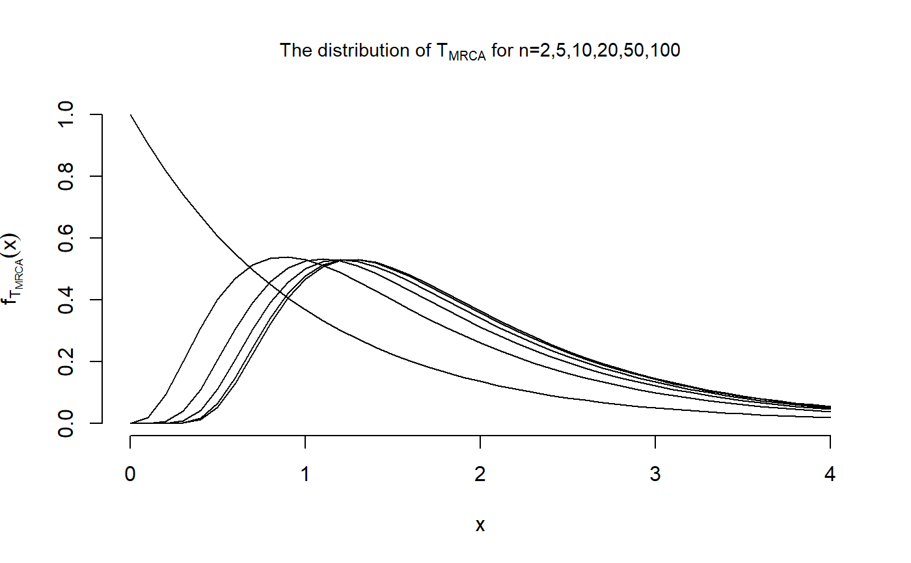
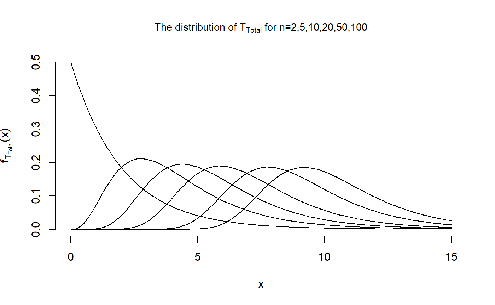

R/DocumentationDensityDistributionQuantileSimulation.R
dphasetype.RdDensity, distribution function, quantile function and simulations for
the phase-type distribution with initial distribution equal to
initDist and sub-transition/sub-intensity matrix equal to
P_Mat/T_Mat.
dphasetype(object, x) pphasetype(object, x) qphasetype(object, p) rphasetype(object, n)
| object | an object for which the density, distribution function,
quantile function or random generation should be computed. To be able to use
these function,the object has to be of
class |
|---|---|
| x | a single non-negative quantile or a vector of non-negative quantiles. |
| p | a single probability or a vector of probabilities. |
| n | the number of observations (n>=1). |
Mogens Bladt and Bo Friis Nielsen (2017): Matrix-Exponential Distributions in Applied Probability. Probability Theory and Stochastic Modelling (Springer), Volume 81.
dphasetype gives the density, pphasetype
gives the distribution function, qphasetype gives the quantile
function, and rphasetype simulates from the distribution.
The length of the output is equal to the length of the input, i.e. for
dphasetype and pphasetype the length of the output is equal to
the length of the quantile vector x, for qphasetype the output is of
the same length as the input vector p, and rphasetype produces
an output of length \(n\).
In the discrete case, the phase-type distribution has density
$$f(x) = initDist (P_Mat ^ (x-1))t + (x=1)(1-sum(initDist)), $$
for integers \(x \ge 1\), where initDist is the initial distribution, P_Mat is the sub-transition
probability matrix and t = (I-P)e. Furthermore, the distribution function
is given by
$$F(x) = 1- initDist (P_Mat ^ x) e + (x \ge 1)(1-sum(initDist)). $$
If the quantile \(x\) is a
real number, the function will round the number down in order to obtain a
natural number.
In the continuous case, the phase-type distribution has density
$$f(x) = initDist expm(x T_Mat) t, for x \ge 0 , $$
where initDist is the initial distribution, T_Mat is the sub-intensity
rate matrix and t = -Te. Furthermore, the distribution function
is given by
$$F(x) = 1- initDist expm(x T_Mat) e, for x \ge 0. $$
## We reproduce Figure 3.4 in John Wakeley (2009): ## "Coalescent Theory: An Introduction", ## Roberts and Company Publishers, Colorado. x <- seq(0,4, by=0.1) dist <- matrix(nrow = 6, ncol = length(x)) dist[2,] <- dphasetype(T_MRCA$n5, x) dist[3,] <- dphasetype(T_MRCA$n10, x) dist[4,] <- dphasetype(T_MRCA$n20, x) dist[5,] <- dphasetype(T_MRCA$n50, x) dist[6,] <- dphasetype(T_MRCA$n100, x) ## For n=2, the initial distribution is initDist = 1 and the sub-transition probability ## matrix is T_Mat = -1, hence the distribution is given by dist[1,] <- exp(-x) plot(x, dist[1,], type = "l", main = expression(paste("The distribution of ", T["MRCA"], " for n=2,5,10,20,50,100")), cex.main = 0.9, xlab = "x", ylab = expression(f[T[MRCA]](x)), xlim = c(0,4), ylim = c(0,1), frame.plot = FALSE)x <- seq(0,15, by=0.1) dist <- matrix(nrow = 6, ncol = length(x)) dist[2,] <- dphasetype(T_Total$n5,x) dist[3,] <- dphasetype(T_Total$n10,x) dist[4,] <- dphasetype(T_Total$n20,x) dist[5,] <- dphasetype(T_Total$n50,x) dist[6,] <- dphasetype(T_Total$n100,x) ## For n=2, the initial distribution is initDist = 1 and the sub-transition probability ## matrix is T_Mat = -1/2, hence the distribution is given by dist[1,] <- exp(-x/2)/2 plot(x, dist[1,], type = "l", main = expression(paste("The distribution of ", T["Total"], " for n=2,5,10,20,50,100")), cex.main = 0.9, xlab = "x", ylab = expression(f[T[Total]](x)), xlim = c(0,15), ylim = c(0,0.5), frame.plot = FALSE)## Simulating ten total branch lengths ## for a sample of size 5 rphasetype(T_Total$n5, n=10)#> [1] 7.690406 1.530002 3.659695 4.351582 3.250653 3.566085 2.789474 1.168513 #> [9] 3.406250 2.999922